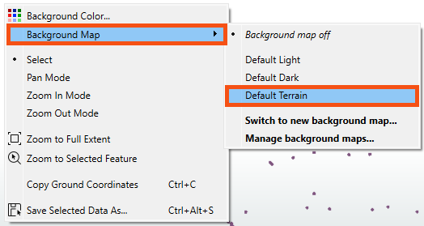
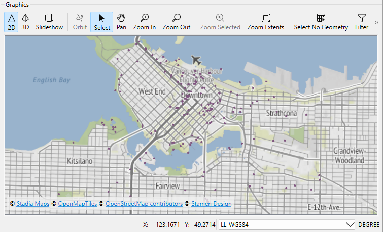

Learning Objectives
After completing this lesson, you’ll be able to:
- View your written data.
- View spatial data with a background map for context.
Instructions
In this lesson, you will:
- Scroll down to read the text below.
- Complete the exercise by following the steps.
- Complete the Quiz toward the bottom of the page.
- Optional: Let us know if you found this lesson relevant to your role by filling out the survey at the bottom of the page.
- Click 'Next' to mark the lesson complete.
Resources
Background Map
You can view the data now, but it is presented with little context. We want to get a general sense of where most art installations are located. We know from experience that viewing the data with a background map can help with this task. In general, we should add a background map to spatial data when we want to:
- See data in the context of common data we don’t have on hand, like water bodies, streets, and parks
- Compare locations against one another
- Visually check for densities, aggregations, or patterns in the data
To use a background map, your dataset must have a known coordinate system either stored in the data itself or explicitly specified. If your data doesn’t look as you expect when you add a background map, you likely have a coordinate system problem.
Scenario
Sven would like to better understand the public art data. To provide context, he'll add a background map to Data Preview.
1) Open Starting Workspace
- Start FME Workbench (2026.1 or later).
- Open the starting workspace (C:\FMEData\Workspaces\IntegrateDataWithTheFMEPlatform\view-data-with-a-background-map.fmw).
2) View Written Data
- Click View Written Data on the PublicArt writer feature type to open the geodatabase in Data Preview.

3) Add a Background Map
Let's add a background map to Data Preview.

FME Workbench may already have a background map configured if you are taking a Safe Software-hosted training course. You can still follow along to learn how to do it.
- Right-click on the Graphics View pane.
- Select Background Map > Default Terrain.
- We can select Default Terrain because it does not require an account.
- There are many background map services available under Switch to new background map... if you prefer to use a different service.

- The background map appears in the Graphics View.
- If you ever lose a window in Workbench, consider using View > Windows > Restore Default Layout. You can also review Workbench's window management.
- Observe that most art installations are in the Downtown neighborhood and the central and northern areas shown below.

Map tiles © Stadia Maps, © OpenMapTiles, © OpenStreetMap contributors, © Stamen Design
4) Change the Background Map
- In the FME Workbench menu bar, use Utilities > FME Options > Background Maps (or FME Workbench > Preferences > Background Maps on a Mac) to swap to a different background map using the Default Dark instead of the Default Terrain layer.
- You can also access this menu by right-clicking the Graphics view and choosing Background Map.
- Click the Mount Pleasant reader feature type to select it.
- Click the View Source Data button that appears above the Mount Pleasant reader feature type.
- Note the number of features it contains. You'll need that number for the quiz.
Leave Us Feedback on This Lesson